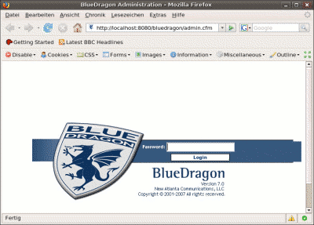

BlueDragon
Archivierte Anleitung
Dieser Artikel wurde archiviert, da er - oder Teile daraus - nur noch unter einer älteren Ubuntu-Version nutzbar ist. Diese Anleitung wird vom Wiki-Team weder auf Richtigkeit überprüft noch anderweitig gepflegt. Zusätzlich wurde der Artikel für weitere Änderungen gesperrt.
Zum Verständnis dieses Artikels sind folgende Seiten hilfreich:
Hinweis:
Dieser Artikel beschreibt, wie man den BlueDragon Server unter Ubuntu installiert. Hier wurde die aktuelle Version 7 verwendet, bei älteren Versionen sollte man diese Anleitung nicht verwenden!
BlueDragon ist ein ColdFusion  Application Server, also eine Alternative zu serverseitigen Technologien wie ASP, JSP/Servlet, Perl und PHP. Programmiert wird hier in der ColdFusion Markup Language (CFML). BlueDragon stellt eine kostenlose bzw. kostengünstigere Alternative zum Coldfusion MX Webserver von Adobe dar. Weitere Informationen zum BlueDragon Server findet man auf der Seite von NewAtlanta
Application Server, also eine Alternative zu serverseitigen Technologien wie ASP, JSP/Servlet, Perl und PHP. Programmiert wird hier in der ColdFusion Markup Language (CFML). BlueDragon stellt eine kostenlose bzw. kostengünstigere Alternative zum Coldfusion MX Webserver von Adobe dar. Weitere Informationen zum BlueDragon Server findet man auf der Seite von NewAtlanta  , dem Hersteller des Servers.
, dem Hersteller des Servers.
Anforderungen¶
Der BlueDragon Server bringt zwar auch einen eigenen Webserver mit, jedoch ist dieser hauptsächlich für die Administration und Debugging gedacht. Deshalb sollte man den BlueDragon Server zusammen mit dem Apache Server verwenden, dessen Installation man im Artikel nachlesen kann.
Installation des Servers¶
Download des Installers¶
Der benötigte Installer für den BlueDragon Server kann auf der NewAtlanta Downloadseite nach einer kostenlosen Registrierung heruntergeladen werden. Man kann wählen zwischen dem für nicht kommerzielle Anwendungen freien "BlueDragon 7" oder dem nur für die Entwicklung freien "BlueDragon 7 JX". Diese Anleitung funktioniert für beide Versionen, man muss lediglich das "JX" weglassen.
Informationen über die Unterschiede der beiden Versionen findet man auf der Produktinformationsseite von NewAtlanta.
Verzeichnis anlegen¶
Um einige Probleme mit falschen Pfadlinks zu vermeiden, ist das Verzeichnis /opt gegenüber /usr/local vorzuziehen. Wer dennoch /usr/local oder ein anderes Verzeichnis wählt, muss die Pfade in dieser Anleitung entsprechend seiner Konfiguration anpassen. Um das BlueDragon Installationsverzeichnis anzulegen, öffnet man zuerst ein Terminal [3] und legt anschließend mit folgendem Befehl das Verzeichnis an.
sudo mkdir /opt/BlueDragon
Installer starten¶
Um den heruntergeladenen BlueDragon Installer zu starten, führt man in einem Terminal [3] einen der folgenden Befehle aus. Auf Desktop-Rechnern mit grafischer Oberfläche:
sudo sh BlueDragon_Server_JX_7*-Linux.sh
Auf Servern ohne grafische Oberfläche:
sudo sh BlueDragon_Server_JX_7*-Linux.sh –i console
Es sind keine Änderungen an den Installationseinstellungen notwendig. Es muss lediglich der Installationspfad geändert werden:
/opt/BlueDragon
Testen der Installation¶
Zunächst muss der BlueDragon Server gestartet werden, indem man ein Terminal öffnet [3] und den folgenden Befehl ausführt:
sudo /opt/BlueDragon/bin/StartBlueDragon.sh
Nun kann man die BlueDragon Administration mit einem beliebigen Browser aufrufen:
(Bei einem entfernten Server ist natürlich "localhost" durch die Serveradresse zu ersetzen)

Systemstart¶
BlueDragon soll nun als Daemon automatisch mit dem System starten, dazu installiert [1] man zuerst das folgende Paket.
daemon (universe, [2])
Benutzer für den Server anlegen¶
Der BlueDragon Server sollte nicht unter dem Root User laufen, darum legt man zuerst einen neuen Benutzer an und gibt ihm die notwendigen Rechte [5].
In diesem Beispiel heißt der neue Benutzer "bdragon". Dazu öffnet man wieder ein Terminal [3] und verwendet die folgenden Befehle.
sudo adduser --system --home '/opt/BlueDragon' -gecos 'BlueDragon CFML Server' --shell /bin/sh --group bdragon sudo passwd -l bdragon sudo chown -R bdragon.bdragon /opt/BlueDragon
Start-Skript einrichten¶
Nun muss man das BlueDragon Start-Skript anpassen. Dieses wird jedoch nicht an der von der original Installationsanleitung beschriebenen Stelle abgelegt. Es befindet sich unter /etc/rc.d/init.d/BlueDragon_Server_JX.
Dieses Start-Skript kopiert man zuerst an die richtige Stelle:
sudo cp /etc/rc.d/init.d/BlueDragon_Server_JX /etc/init.d
Anschließend öffnet man es mit einem Editor mit Root-Rechten [4]. Dort wird der init.d functions-Aufruf auskommentiert, da dieser unter Ubuntu nicht korrekt funktioniert. Anschließend wird der neue BlueDragon Benutzer eingetragen. Außerdem müssen die Pfade angepasst werden. Das Start-Script sollte dann so aussehen.
1 2 3 4 5 6 7 8 9 10 11 12 13 14 15 16 17 18 19 20 21 22 23 24 25 26 27 28 29 30 | #!/bin/sh # Startup script for the BlueDragon Server #. /etc/rc.d/init.d/functions bdstart="/opt/BlueDragon/bin/StartBlueDragon.sh" bdstop="/opt/BlueDragon/bin/StopBlueDragon.sh" prog="BlueDragon Server" bduser="bdragon" start() { echo -n "Starting $prog: " daemon -u $bduser $bdstart RETVAL=$? echo return $RETVAL } stop() { echo -n "Stopping $prog: " daemon -u "$bduser" "$bdstop" RETVAL=$? echo return $RETVAL } case “$1″ in start) start ;; stop) stop ;; restart) stop; start ;; *) echo "Usage: $prog {start|stop|restart}"; exit 1 esac |
Init.d Symlinks¶
Nun müssen nur noch die entsprechenden Symlinks angelegt werden. Diese sorgen dafür, dass das Start-Skript auch beim Starten und Beenden des Systems ausgeführt wird.
sudo update-rc.d BlueDragon_Server_JX defaults
In den Apache Webserver einbinden¶
Verzeichnisstruktur vorbereiten¶
Nun wird der BlueDragon Server in den Apache eingebunden. Dies geschieht als Apache Modul. Zuerst muss jedoch noch die Verzeichnisstruktur vorbereitet werden [3]:
sudo mkdir -p /usr/local/apache/bin sudo mkdir -p /usr/local/apache/conf sudo ln -s /var/www/ /usr/local/apache/htdocs sudo ln -s /usr/lib/apache2/modules/ /usr/local/apache/modules sudo ln -s /usr/sbin/apache2 /usr/local/apache/bin/httpd sudo ln -s /etc/apache2/apache2.conf /usr/local/apache/conf/httpd.conf
Anschließend kopiert man das benötigte Apache Modul in das entsprechende Verzeichnis.
sudo cp /opt/BlueDragon/bin/apache/mod_servletexec22.so /usr/lib/apache2/modules/mod_servletexec22.so
Apache-Konfiguration¶
Nun wird das BlueDragon Modul in die Apache-Konfiguration eingefügt. Dazu öffnet man zuerst die Apache-Konfigurationsdatei /etc/apache2/apache2.conf mit einem Editor [4].
Um das BlueDragon Apache Modul zu laden, fügt man die folgende Zeile in die Konfigurationsdatei ein.
# BlueDragon 7 JX LoadModule servletexec_module /usr/lib/apache2/modules/mod_servletexec22.so
Nun muss der Apache noch so konfiguriert werden, dass die Coldfusion Scripts mit den entsprechenden Dateiendungen auch vom BlueDragon Server verarbeitet werden. Dafür wird die Apache-Konfiguration um die folgenden Einträge ergänzt:
1 2 3 4 5 6 7 8 9 | ServletExecInstances default 127.0.0.1:9999 ServletExecAliases default /servlet .cfc .cfm .cfml .cfchart <location /servlet> SetHandler servlet-exec </location> AddHandler servlet-exec cfc AddHandler servlet-exec cfm AddHandler servlet-exec cfml AddHandler servlet-exec cfchart |
Nach Änderungen an der Apache-Konfiguration muss dieser natürlich neu gestartet werden. Dies macht man am besten, indem man ein Terminal öffnet [3] und folgenden Befehl verwendet.
sudo /etc/init.d/apache2 restart
Testen¶
Zum Testen verwendet man am besten ein kleines ColdFusion Skript. Dazu erstellt man eine neue Datei mit dem Namen test.cfm und folgendem Inhalt mit einem Editor [4] im Webroot des Apache Webservers (normalerweise: /var/www).
1 2 | <cfset myVar='Hello World'> <cfoutput>#myVar#</cfoutput> |
Nun öffnet man die Datei http://localhost/test.cfm lokal im Browser.
Einspielen von Hotfixes¶
Mittlerweile können die ersten Hotfixes für BlueDragon von der NewAtlanta Webseite heruntergeladen werden. Anschließend einfach entpacken [6] und den Anweisungen in den ReadMe-Dateien folgen.
- Erstellt mit Inyoka
-
 2004 – 2017 ubuntuusers.de • Einige Rechte vorbehalten
2004 – 2017 ubuntuusers.de • Einige Rechte vorbehalten
Lizenz • Kontakt • Datenschutz • Impressum • Serverstatus -
Serverhousing gespendet von